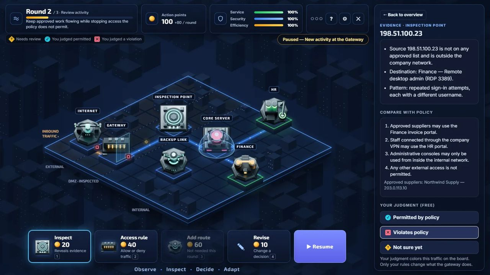
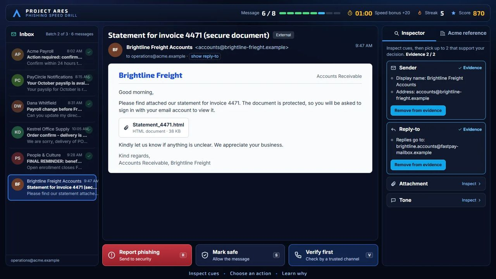
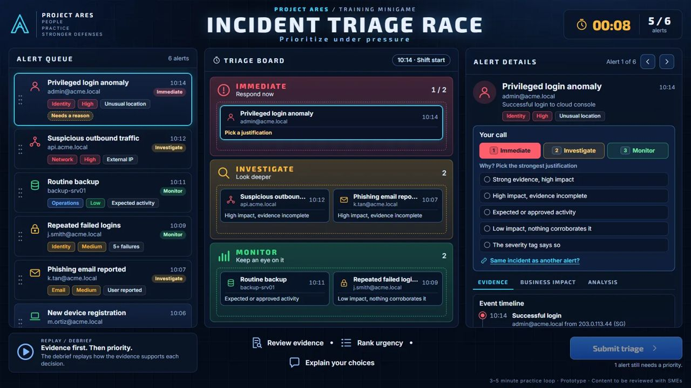
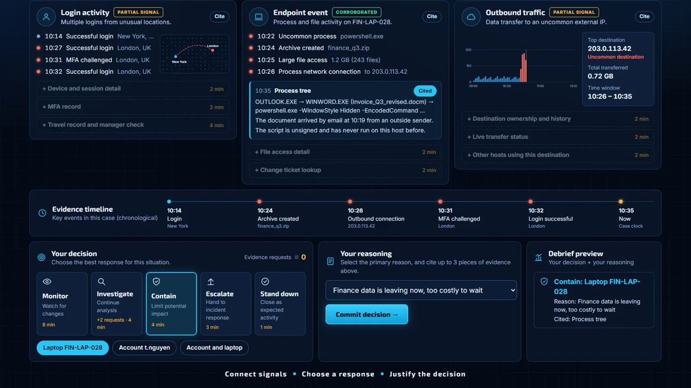
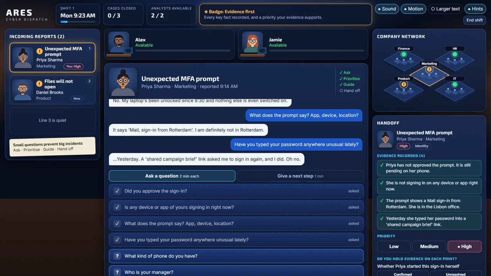
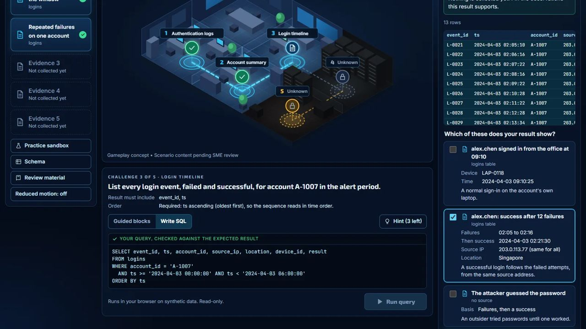
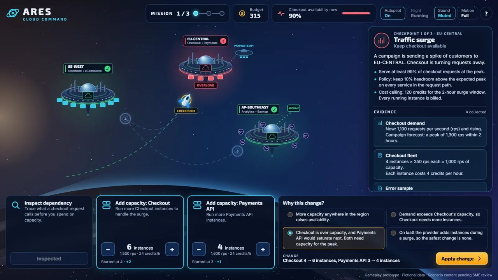
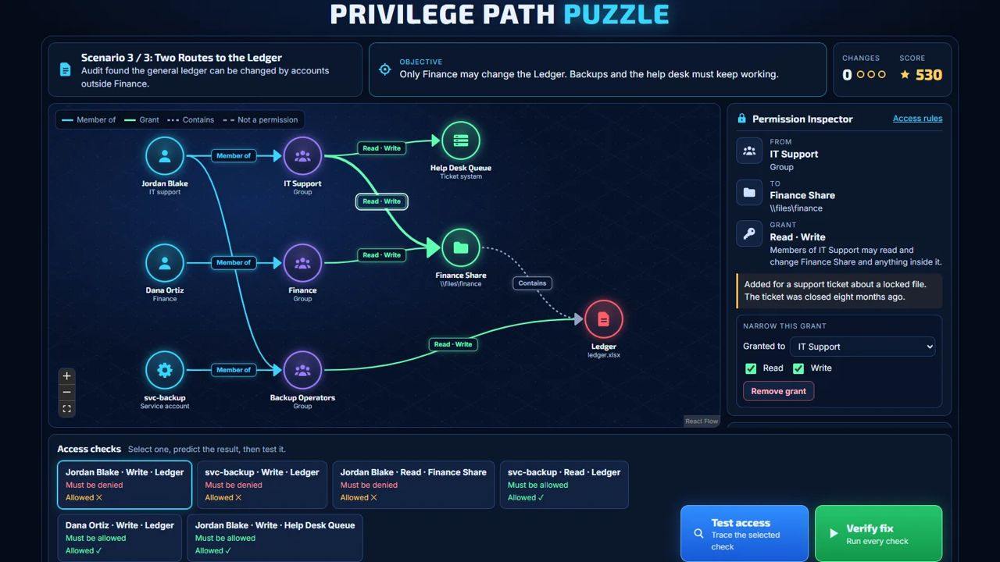
A proposal for Project Ares · Rémi Couture
What I have built for Ares on my own initiative, why it teaches, how it fits the platform, and a plan to keep building games for Circadence and its clients.
The short version
Real training content, not mock-ups: authored scenarios, evidence, policies, queries, and a written explanation for every important mistake. The next pages quote it.
Missions need a live range. These need nothing. They give learners practice between missions, give sales a demo that runs anywhere, and fill slots the platform has already reserved for games.
Keep me on to take these from prototype to production with the games and content teams, and to keep building new ones. I have set out three ways to do that, including a half-time option.
The eight games
| Game | Plays like | What the learner practises | Authored content |
|---|---|---|---|
| Network Defense Keep Finance Online | Isometric strategy | Routes and dependencies, reading evidence, writing a scoped access rule, backup routes that keep policy | 3 rounds, 3 traffic flows, 10 evidence lines, 4 policy lines, 2 reasoning checkpoints, a final no-hint challenge |
| Phishing Speed Drill The Payroll Request | Timed inbox | Sender, reply-to and real link destination; when to report, mark safe, or verify by phone | 8 messages (3 phishing, 3 legitimate, 2 need verification), 32 cues, each with a reason |
| Incident Triage Race The Busy Morning | Alert board | Prioritising by evidence and business impact, not the severity tag; revising when facts change | 6 alerts, 29 timeline evidence items, 18 authored assessments, 2 mid-shift updates |
| SOC Dashboard Challenge A Strange Login | Investigation case | Telling discriminating evidence from evidence that fits both stories; proportionate response under time | 2 hidden truths with identical openings, 9 evidence items in 2 variants, 11 timed events |
| Cyber Dispatch First Shift | Dispatcher desk | Asking the right questions, giving the safe next step in time, handing off only what is confirmed | 6 reports across 2 shifts, 38 questions, 26 facts, 24 guidance options |
| Query Hunt Unusual Access | SQL investigation | WHERE, GROUP BY, ORDER BY, JOIN on real tables, and not over-claiming from the results | 5 challenges, 4 tables, 2 datasets, real SQLite running in the browser |
| Cloud Command First Orbit | Arcade flight | Capacity through a dependency, cost against availability, least privilege, the IaaS responsibility split | 3 checkpoints, 11 evidence items, 12 justifications with feedback, 7 permissions |
| Privilege Path Puzzle Who Can Read Payroll | Graph puzzle | Tracing nested groups and inherited grants, and making the smallest fix that keeps business access | 3 puzzles, 22 nodes, 13 access checks each with a business reason |
All eight, in motion
Watch all eight in three minutes
Download the reel or the slides as a PDF. Every game slide has a Play button.
The look
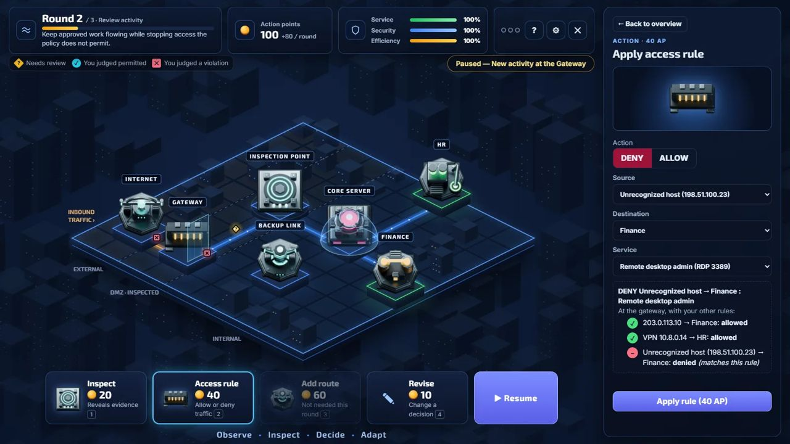
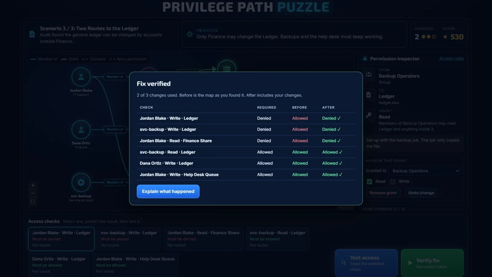
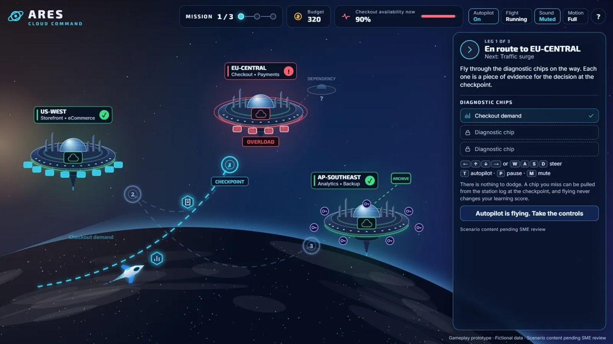
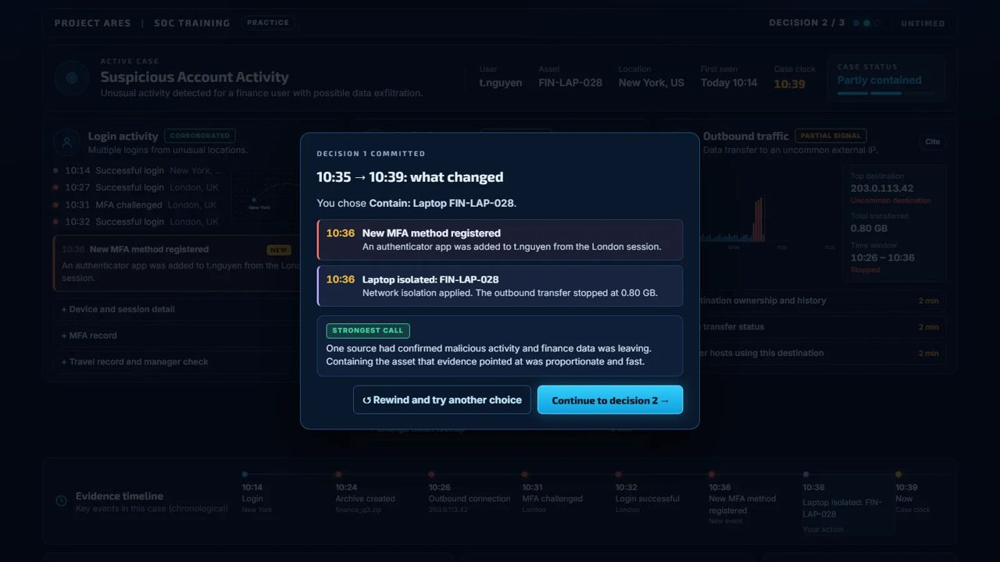
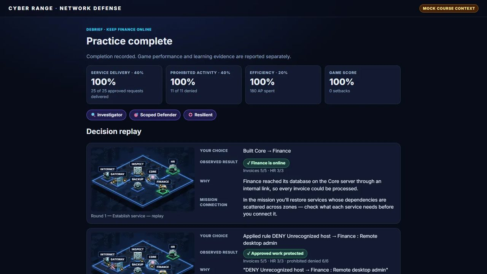
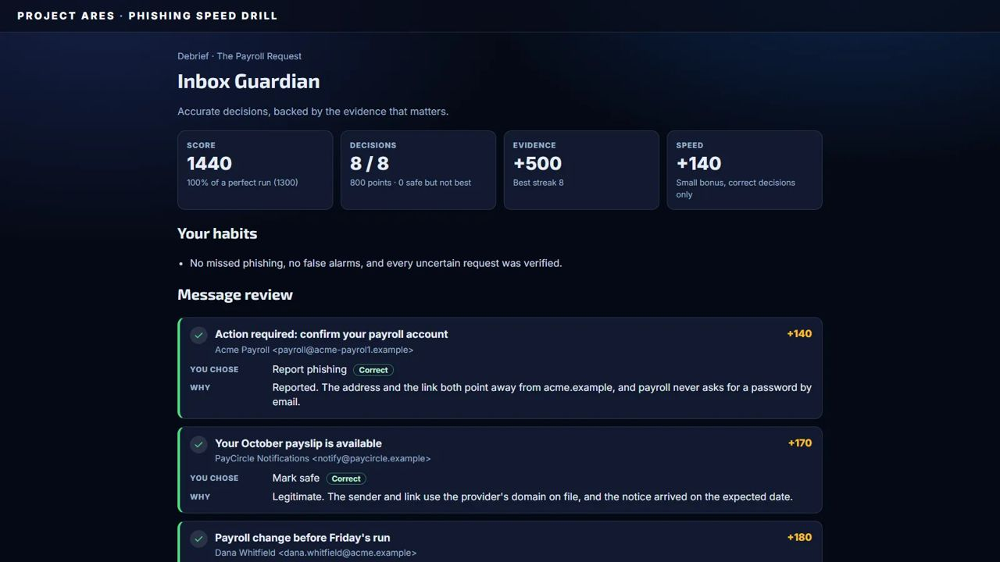
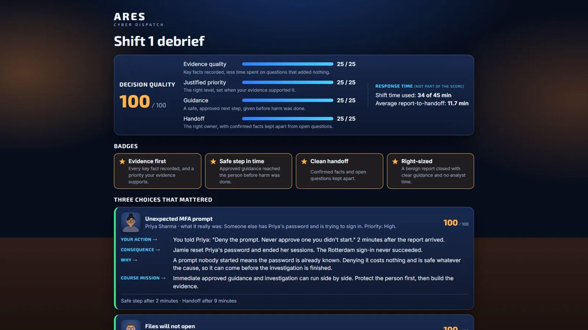
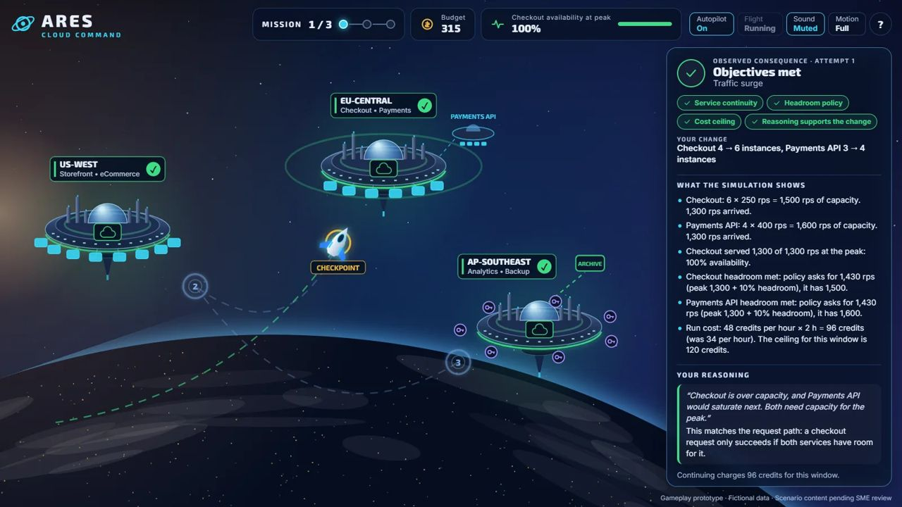
How it is scored. 40% service delivered, 40% prohibited activity denied, 20% efficiency. Two reasoning checkpoints and the final challenge are recorded separately as learning evidence.
Proved by tests. “Blanket blocking cannot earn the best result” and “backup routes preserve the access policy”, each checked on 8 seeds. 32 tests.
Depth and replay. A new seed changes the traffic order, the attacker’s address and service, and which link fails.
Game 1 of 8 · Isometric strategy
Teaches: How routes and dependencies keep a service up, how to read evidence, and how to write an access rule that stops the attacker without stopping the business.
DENY 203.0.113.200 → HR : Admin consoleWhy it sticks. The learner watches a rule succeed or fail on live traffic, so cause and effect are remembered together.
Where it fits Ares. Fits the reserved packet-gate and network-segmentation slots. Firewall and ACL rules are listed as untapped.
How it is scored. 100 for the best response, +20 per strong cue cited, a streak bonus, and a speed bonus that only counts after a correct decision. A false alarm scores zero.
Proved by tests. Always-report, always-safe and always-verify each “stay out of the top two ratings”. “Slow but correct play still earns the top rating.” 53 tests.
Depth and replay. 8 messages, 32 cues. The first message is guided and untimed; later batches are shuffled per seed.
Game 2 of 8 · Timed inbox drill
Teaches: Reading the sender, the reply-to and the real link destination, backing a call with evidence, and knowing when only a phone check can settle it.
helpdesk@acme.example.it-notices.example “A domain is read from the right. This address belongs to it-notices.example; ‘acme.example’ is only a label in front of it.”Why it sticks. Citing the evidence before deciding builds the habit of looking, not guessing.
Where it fits Ares. Fits the reserved phish-sprint slot. Suits awareness training for every employee, not only analysts.
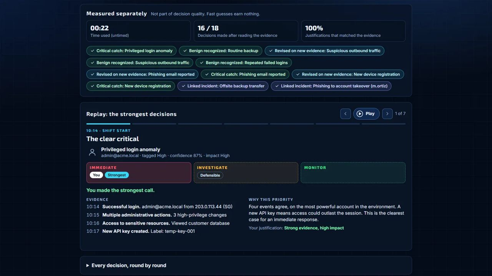
How it is scored. Points for the best or a defensible lane, a matching reason, revising on new evidence and correct links. Missed criticals and needless escalations cost points. Time is reported separately.
Proved by tests. “Never treats the severity tag as a valid justification.” “Rewards revising when evidence changes, not standing still.” 13 tests.
Depth and replay. 6 alerts, 29 evidence items, 2 updates over 3 rounds, with a 7-moment replay in the debrief.
Game 3 of 8 · Alert triage board
Teaches: Setting priority from evidence and business impact, linking alerts that are one incident, and revising when new facts arrive.
Why it sticks. Being wrong about the quiet alert, then seeing why, is the lesson people repeat to colleagues.
Where it fits Ares. Matches the design guide’s “Alert Triage” concept. A natural team game for workshops.
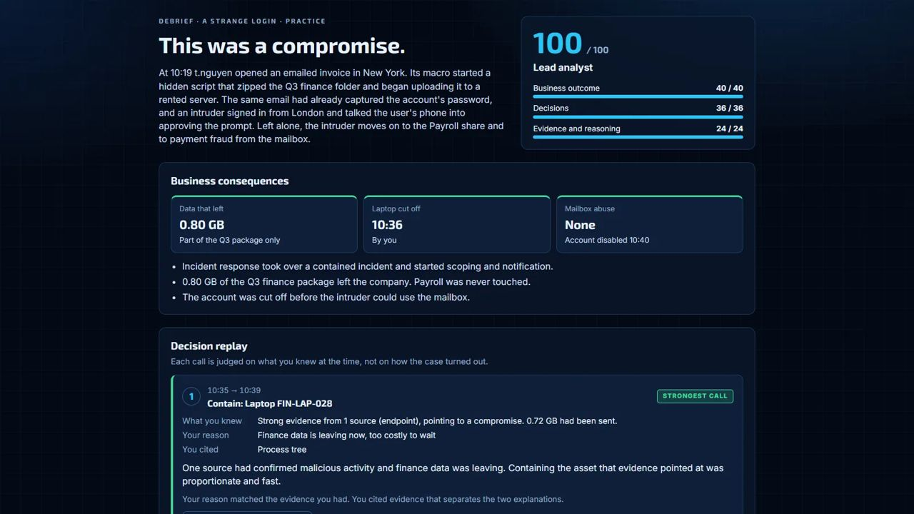
How it is scored. Outcome 40, decisions 36, reasoning 24. “Each call is judged on what you knew at the time, not on how the case turned out.”
Proved by tests. “No single blind opening wins in both variants.” “Investigating first is not always right: delay lets the incident progress.” 13 tests.
Depth and replay. The seed decides whether it is a compromise or approved work. Practice mode can rewind to any decision.
Game 4 of 8 · SOC investigation case
Teaches: Separating evidence that discriminates between explanations from evidence that fits both, and responding in proportion while data is leaving.
Why it sticks. Two truths with the same opening teach that the right call comes from evidence, not from matching a familiar story.
Where it fits Ares. A step up from triage toward analyst missions, and a warm-up before a range investigation.
How it is scored. Four parts of 25 per report: evidence gathered, priority, guidance and handoff. Response time is shown but kept out of the score.
Proved by tests. “Escalating everything as high scores poorly.” “Asking every question before acting is not the best run.” 24 tests.
Depth and replay. 6 reports over 2 shifts, 38 questions, 24 guidance options. The second shift changes which report is benign.
Game 5 of 8 · Dispatcher desk
Teaches: Asking the questions that matter, giving the safe next step before harm lands, and handing off only what the evidence confirms.
Why it sticks. Recoverable harm: the learner sees the damage a bad instruction causes, then gets to put it right.
Where it fits Ares. Covers first response and handoff, part of the incident response lifecycle listed as untapped. Good for help desks.
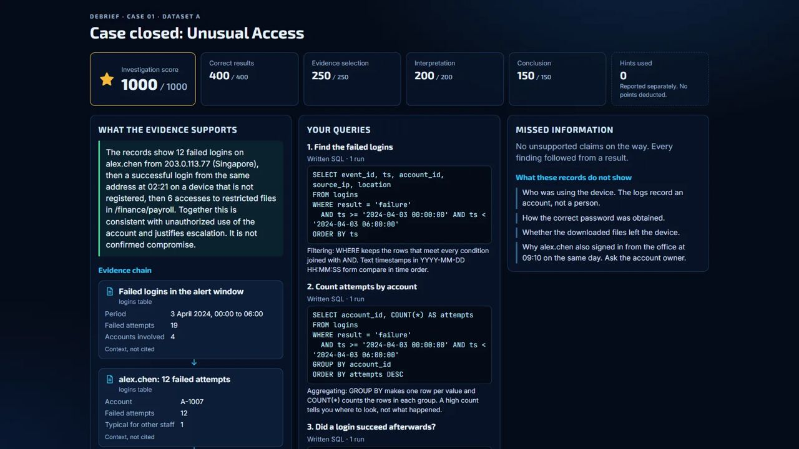
How it is scored. Out of 1,000: correct results, evidence cards, interpretation and conclusion. A right conclusion without its evidence scores zero. Hints are counted, never deducted.
Proved by tests. “Accepts equivalent queries written differently.” “Never grants evidence for running a query.” Real SQLite runs in the tests. 31 tests.
Depth and replay. A second dataset makes the highest failure count the wrong account to follow. Guided tiles or written SQL.
Game 6 of 8 · SQL investigation
Teaches: Filtering, aggregating and joining real log tables, reading the result correctly, and telling a suspicious observation from a confirmed conclusion.
SELECT account_id, COUNT(*) AS attempts FROM logins WHERE result = 'failure' … GROUP BY account_id ORDER BY attempts DESCWhy it sticks. Writing the query is retrieval practice. Being stopped from over-claiming teaches analytic discipline.
Where it fits Ares. Fits the reserved log-hunt slot. Log analysis is listed as untapped.
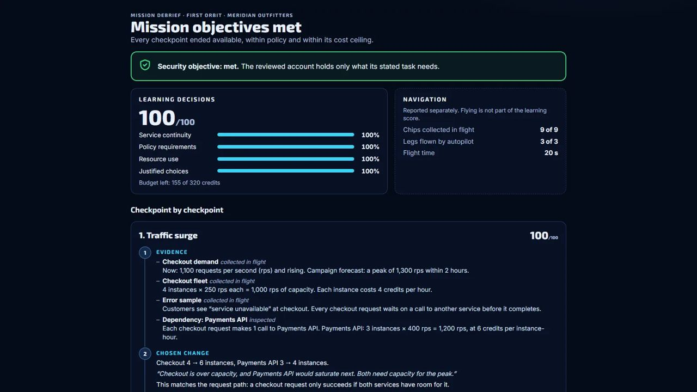
How it is scored. Continuity 35%, policy 30%, resources 15%, justification 20%. A failed access review marks the security objective failed whatever the score.
Proved by tests. “Adding capacity helps only where capacity is the constraint.” “Does not let a high score hide a failed security objective.” 18 tests.
Depth and replay. 3 checkpoints, 11 evidence items. Fly manually or on autopilot; flying is reported apart from the learning score.
Game 7 of 8 · Arcade flight
Teaches: Finding the real capacity constraint through a dependency, balancing availability against cost, least privilege, and who is responsible for what on IaaS.
Why it sticks. The numbers in the feedback come from the simulation, so the explanation matches exactly what the learner did.
Where it fits Ares. Cloud security is listed as untapped. The arcade layer shows the same content can carry a lighter style.
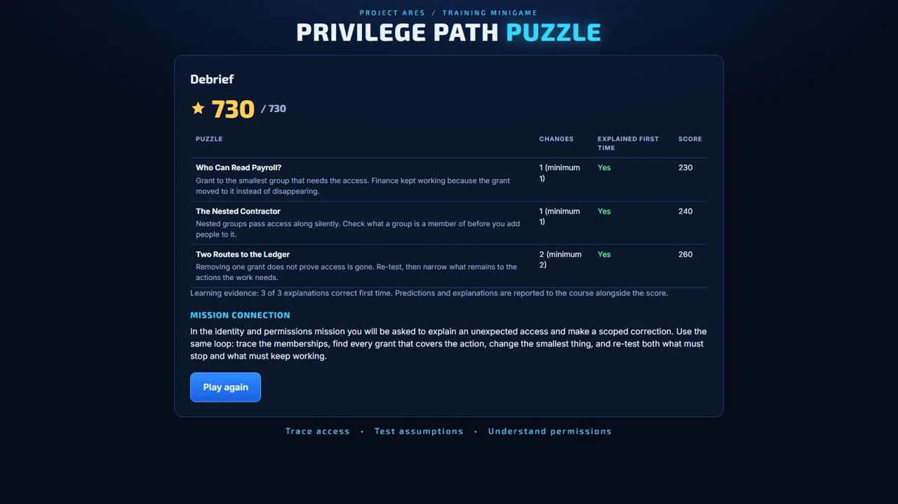
How it is scored. 100 for solving, a bonus for matching the minimum number of changes, points for correct predictions, and 40 for explaining it right first time.
Proved by tests. “Never treats connectivity as authorization.” Each puzzle “cannot be solved with fewer changes than par” and “fails when access is removed for everyone”. 25 tests.
Depth and replay. 3 puzzles, 22 nodes, 13 access checks. Inspect, predict, test, change, verify, explain.
Game 8 of 8 · Access graph puzzle
Teaches: Tracing nested groups and inherited grants to find every route to a file, then making the smallest change that closes it without breaking business access.
Why it sticks. Predict, test, then explain: the learner commits to an answer before seeing the result.
Where it fits Ares. Matches the design guide’s “IAM Auditor” concept. Identity and access is listed as untapped.
Why people remember it
They write the SQL, build the rule, place the alert, choose the fix. Producing an answer builds memory that reading and recognising do not.
Feedback names the decision and the reason, at the moment it happens. Network Defense alone has about 19 explanation templates.
A wrong call queues a fraudulent payment or cuts off a working laptop, in fiction. The learner sees the cost, then gets to fix it.
Inspecting never classifies for you. Weak evidence never counts as proof. A correct conclusion without its evidence scores zero in Query Hunt.
Choice, observed result, why, and how it connects to the mission. Network Defense rebuilds the exact moment from the command log.
Seeds and variants change traffic, attackers, the failing link, or which report is benign, so a replay is practice and not memorisation.
One rule runs through all eight: the game score and the learning evidence are recorded separately. As one debrief puts it, “this record is evidence, not a grade.” That is what makes the result usable for reporting.
Twenty years of game craft, applied to training
If a learner can win by doing the same thing every time, the game teaches that habit. So every game has tests that prove the lazy strategy loses.
| Lazy strategy | What the tests prove |
|---|---|
| Block everything | “Blanket blocking cannot earn the best result”, checked on 8 seeds |
| Report every email | Always-report, always-safe and always-verify each “stay out of the top two ratings” |
| Escalate everything | “Penalizes escalating everything alarming” and “penalizes monitoring everything” |
| Trust the label | “Never treats the severity tag as a valid justification” |
| Always investigate first | “Investigating first is not always right: delay lets the incident progress” |
| Go fast | “Slow but correct play still earns the top rating”; speed only counts after a correct decision |
A guided, untimed first step in each game. The learner acts before they read a manual, the way a good game tutorial works.
Action points, analyst slots, credits and case minutes are all limited. Limited resources are what turn knowledge into decisions.
Routes light up, tokens bounce off a rule, a service goes dark. Shape and icon back up colour, so the signal never depends on colour alone.
Ratings, a clean-run target, and a variant that changes the right answer. Query Hunt’s second dataset makes the highest count the wrong account to follow.
Built like a product, not a demo
Scenarios, evidence, policy and explanations sit in a single data file, apart from the code. A content developer or SME can review and change the teaching without touching the engine.
Each game’s simulation is pure logic, separate from the screen. That is why 209 tests can check the learning rules in under two seconds.
The same seed and the same commands always give the same result. It powers the debrief replays, and it would let the platform verify a result on the server.
Each game posts started, statement, completed and navigate messages to its host page, with an activity ID per scenario. A draft integration document describes the payloads.
Four games come with a review sheet that lists every objective, simplification and explanation for an expert to approve, correct or reject.
Keyboard play, focus-trapped dialogs, screen-reader announcements, and reduced-motion and larger-text settings. Layouts stack for small screens.
The full line-up
New · my eight, playable now. Judgment under pressure: what to do with incomplete evidence, limited time and a business to keep running.
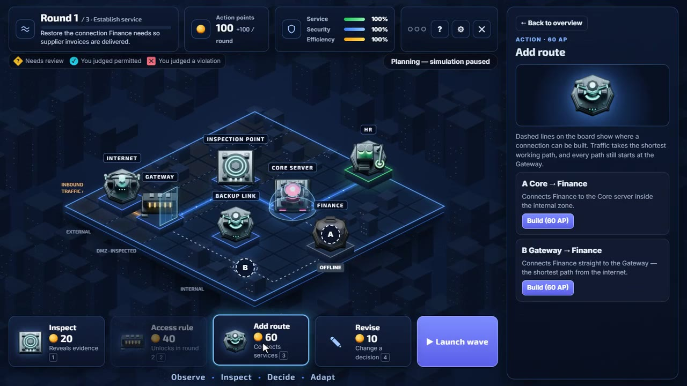
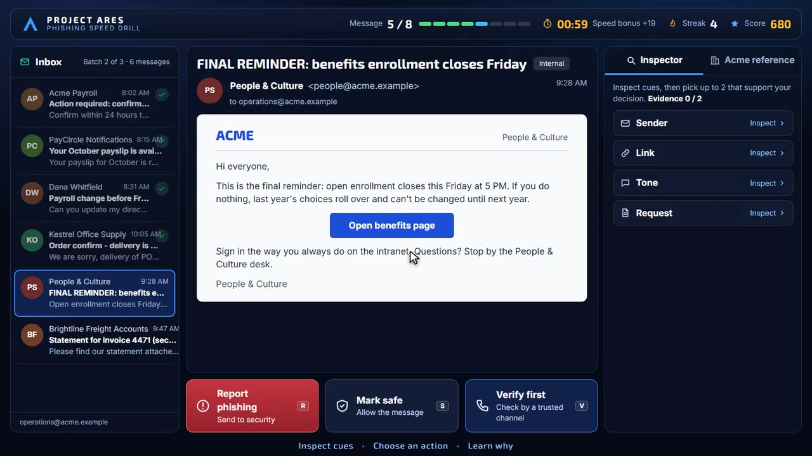
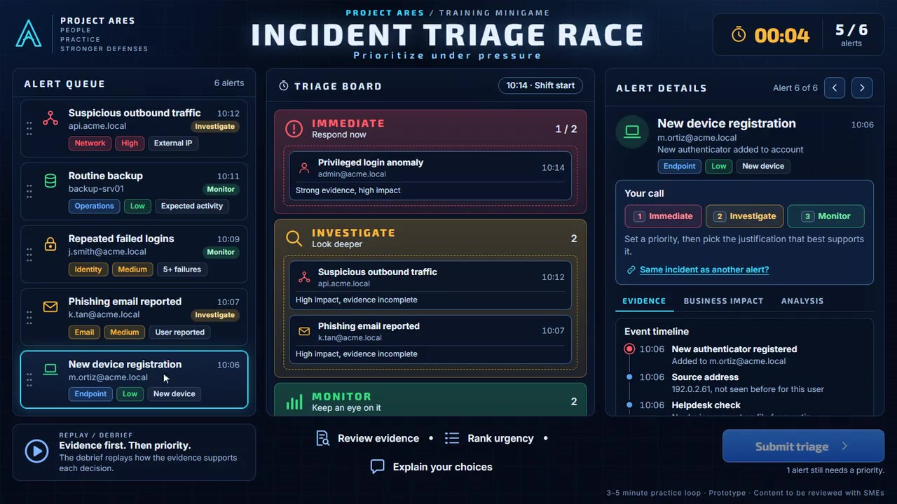
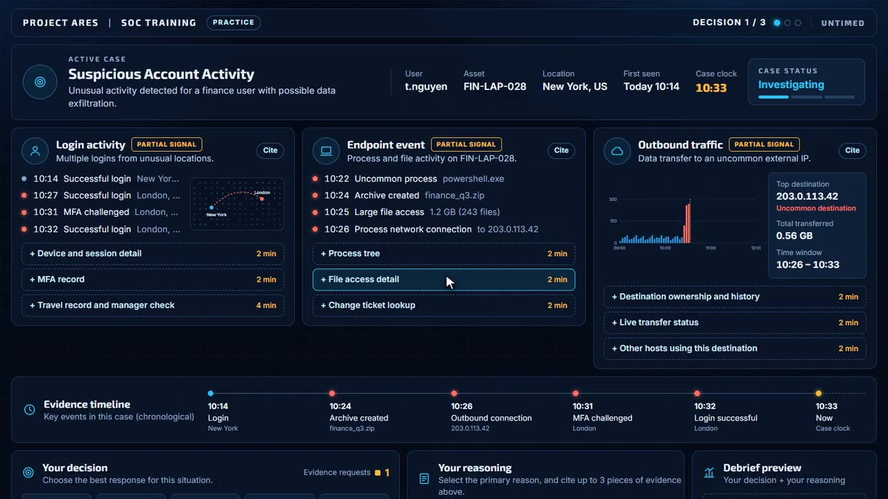
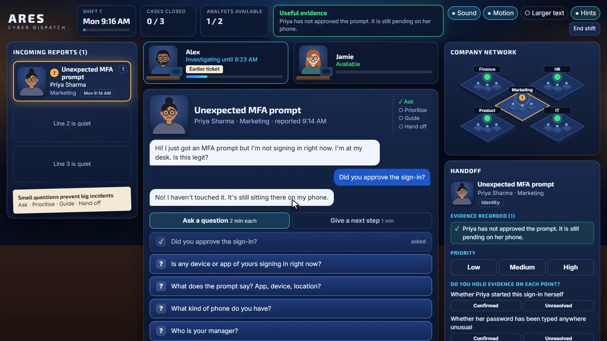
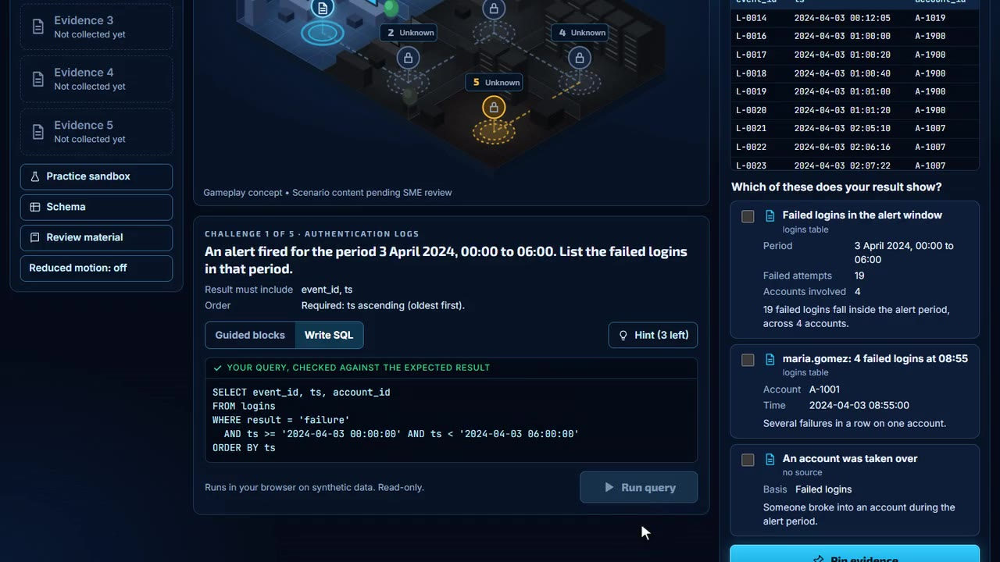
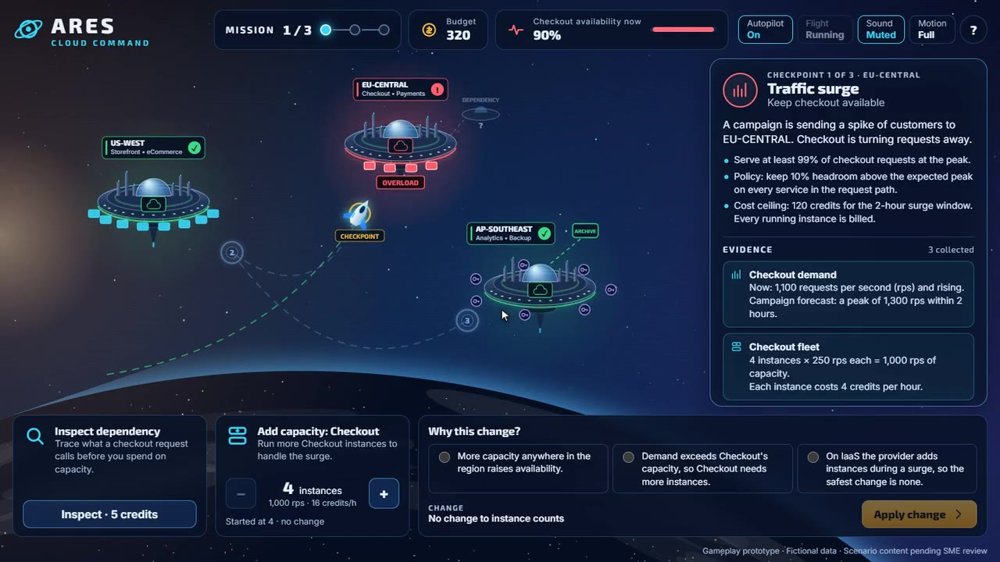
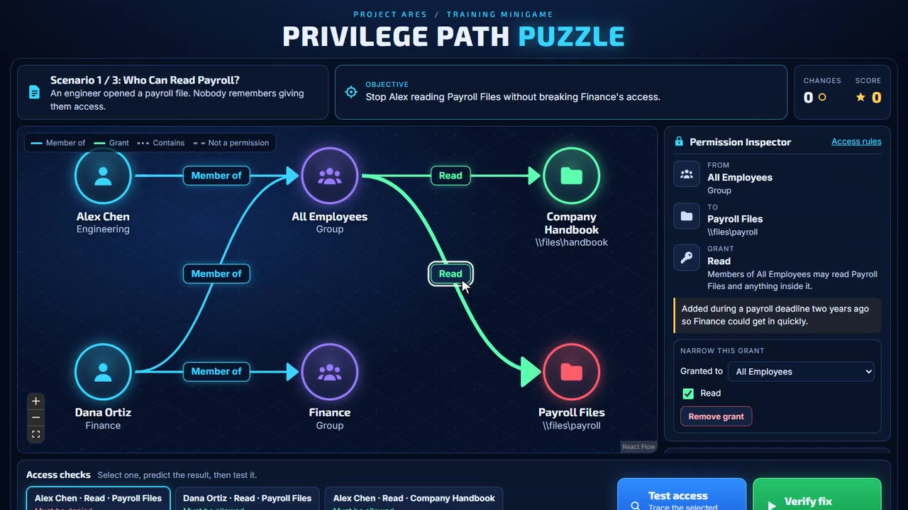
In the hub today · built by the games team. Framework fluency: tactics, the kill chain, patterns, ports and attack paths.
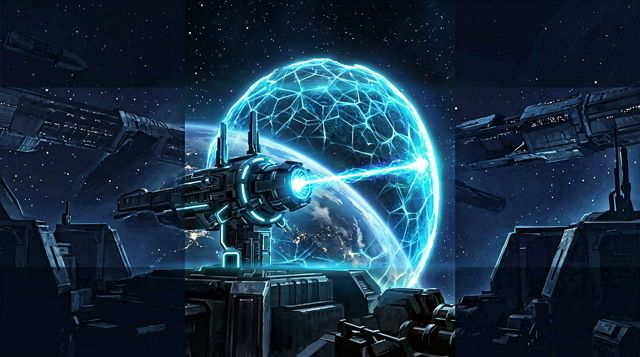
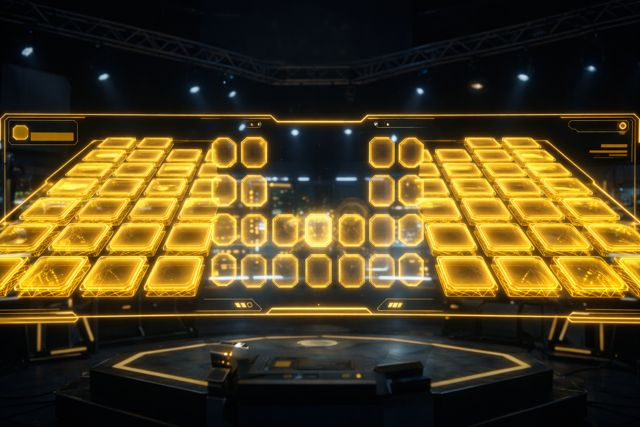
Where it fits Ares
The six games in the hub today, built by the games team, cover ATT&CK tactics, the kill chain, regex, ports, trivia and attack paths. The team’s own design guide lists what is still uncovered, and the router already holds five reserved game slots with nothing behind them.
| Open in the design guide or router | What I have playable |
|---|---|
Reserved slot phish-sprint | Phishing Speed Drill |
Reserved slot log-hunt · “Log Analysis / SIEM: entirely untapped” | Query Hunt |
Reserved slots packet-gate, network-segmentation-sim · “Firewall / ACL Rules: entirely untapped” | Network Defense |
| Tier 2 concept “Alert Triage” | Incident Triage Race, SOC Dashboard Challenge |
| “Cloud Security (IAM, exposure): entirely untapped” | Cloud Command, Privilege Path Puzzle |
| “Incident Response Lifecycle: entirely untapped” | Cyber Dispatch (first response and handoff) |
The hub’s games drill recall of frameworks. These drill judgment: what to do with incomplete evidence, limited time and a business to keep running. The two sets complement each other.
The mechanic collapses without domain knowledge. Accuracy outranks speed. Feedback happens during play. Replay is driven by content. Explicit NICE work-role and KSA mapping is the piece still to add, with the content team.
The hub uses a ready, score-update, complete message flow. My games already post the equivalent events, so each needs a thin adapter, not a rewrite.
More games, in any style
The shared pieces already exist: the seeded random generator, the replay log, the host messages, the accessibility helpers and the build. A new game is a data file, a simulation, a screen and a test file.
| Concept | Why |
|---|---|
| IR Sequencer | Tier 1 in the design guide. Order the response steps under pressure. |
| CSF Incident Sorter | Tier 1. Route events to Identify, Protect, Detect, Respond, Recover. |
| ATT&CK Technique Mapper | Tier 1. Takes the hub from tactic level to technique level. |
| More cases for the eight | New scenarios are content, not code. Query Hunt Case 02, a second phishing inbox, a harder shift. |
| Team modes for workshops | Head-to-head triage and dispatch for Security Immersion Workshop events, with a shared leaderboard. |
| Mission warm-ups | A two-minute game before a range mission that drills the one concept the mission depends on. |
What it does for Circadence
A mission allocates live virtual machines. A game is a static page. Learners can practise as often as they like without a range starting up.
No sign-in and no install. A prospect can play a round in a meeting, on a booth screen, or from a link in an email, and understand what Ares teaches.
New games widen the catalog between major releases, and give customer admins something fresh to assign.
Short, scored, spectator-friendly games suit Security Immersion Workshops, where dozens of people play at once from a browser.
Each game records decisions and reasoning separately from the score. Once mapped to work roles, that feeds readiness reporting with more than a completion tick.
Text is held as data, so games can be localised the same way as the platform. I have already worked on the Japanese strings across the player app.
I have not measured learner outcomes yet, and I am not claiming numbers. The first thing I would do with the team is put these in front of real learners and measure completion, replays and what they get wrong.
Honest status
| Open item | What it needs |
|---|---|
| SME review | All content is marked draft. Four games have review sheets ready; four still need one written. I need a few hours of expert time per game. |
| Learner playtesting | None yet. Internal staff first, then a friendly customer cohort. |
| Framework mapping | The games do not yet name NICE work roles or KSAs. That mapping should be done with the content team so it matches the catalog. |
| Platform integration | The host contract is a draft that has not been agreed with the platform team. Course and mission text is mocked. |
| Localisation | English only today. Japanese follows SME sign-off. |
| Borrowed art and patterns | Network Defense uses sprites reused from another developer’s project with their go-ahead. Before shipping I would confirm that in writing or replace the art. |
| Depth | Three games have seeded variation, two have a second variant, three have one scenario. More cases are content work. |
Because closing them is the job I am asking to do. None of it is research. It is review, integration and content, and I know exactly what each game needs.
The first 90 days
These are targets, and they depend on SME and platform time I do not control. I would rather agree the order with you than promise a date I cannot own.
What is already on the table
| Piece | What exists today | Without it |
|---|---|---|
| Game design | Eight different mechanics, each one built so it cannot be won without the knowledge | Finding a designer who knows both games and cyber training |
| Authored content | 8 phishing messages with 32 cues, 6 alerts with 29 evidence items, 6 dispatch reports with 38 questions, 5 SQL challenges on 2 datasets, 3 access puzzles, 3 cloud checkpoints, and an explanation for every important mistake | Writer and SME time for every scenario from a blank page |
| Engineering | About 22,000 lines of TypeScript, eight static builds, one shared pattern | A front-end build from an empty folder |
| Balance and proof | 209 passing tests, including the ones that prove the lazy strategies lose | Finding the exploits the hard way, with real learners |
| Review and integration | Four SME review packs ready to sign, and a draft host contract with an activity ID per game | Starting both conversations from nothing |
Any of the eight can be demoed in a browser today. No range to start, no sign-in, nothing to install. That is a new thing to put in front of a prospect this quarter.
Game design, UX, front-end build, and knowledge of Ares from the inside. My 89 commits in the platform cover the world map, dashboard, debrief and the HUD screens, so these games are built to sit in the product, not beside it.
This does not need a new team or new infrastructure. It needs the person who built it, some SME hours, and a small integration step.
Ways to keep this going
I move toward the games team. The 90-day plan runs as written, and I keep supporting the player UI I already own: world map, dashboard, debrief and the HUD screens.
One focus: take the eight to production in priority order, then new games. The plan stretches to roughly twice the calendar time. UI work is by request.
You pick a game. I deliver it reviewed, integrated and tested for an agreed scope. No standing commitment, and the work continues at whatever pace you choose.
Eight working games and the person who knows every rule in them. A designer with twenty years of game experience who also builds. Someone already inside the product: the world map, dashboard, debrief and 16 HUD screens are my work.
These games are not in the platform repository yet. Without someone to take them through review and integration, they stay prototypes, and the open slots in the hub stay open.
My ask: thirty minutes to play two of them with you, and a decision on which option fits. The games are ready to demo to a customer now; the only open question is who takes them the rest of the way.